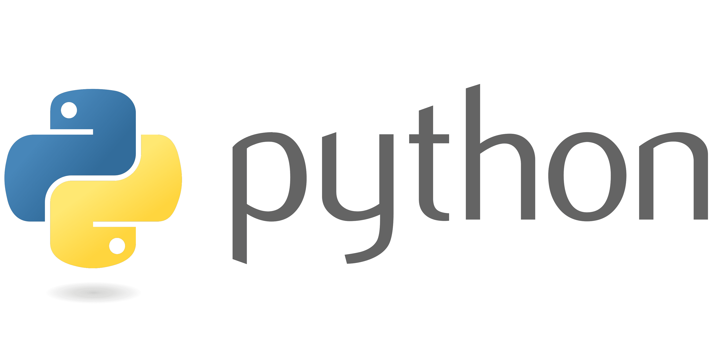

Sobre mim
Resumo
Sou Natural de Conceição do Jacuípe, uma cidade localizada no interior da Bahia. Sou uma pessoa introvertida, observadora, lógica, curiosa. Em 2019, me tornei Bacharel em Engenharia de Computação pela Universidade Estadual de Feira de Santana (UEFS), onde tive a oportunidade de conhecer a metologia de Aprendizagem Baseada em Problemas, o PBL, e também de atuar em projetos de Iniciação Científica.
Atualmente sou estudante de Mestrado no Programa de Pós-Graduação em Ciência da Computação da Universidade Estadual de Feira de Santana. Tendo pesquisa localizada no contexto de Ciência de Dados e Aprendizado de Máquina, aplicando Deep Learning em um problema de classificação de imagens médicas.
Possuo experiência com o Desenvolvimento de Sistemas Web, e Aplicativos, utilizando HTML5, CSS3, JavaScript, React, React Native, Node. Nos últimos 2 anos tenho trabalhado em uma migração de carreira para a área de Ciência de Dados e Aprendizado de Máquina, adiquirindo experiência com a linguagem Python, utilizando bibliotecas como pandas, numpy, scikit-learn, e frameworks como TensorFlow e PyTorch.
Formação Acadêmica
-
Bacharelado em Engenharia de Computação
de Março de 2013 até Maio de 2019
Universidade Estadual de Feira de Santana (UEFS)
-
Mestrado em Ciência da Computação
de Agosto de 2020 até Atualmente
Universidade Estadual de Feira de Santana (UEFS)
Habilidades adquiridas
- 
-

-

-

-

-

-

-